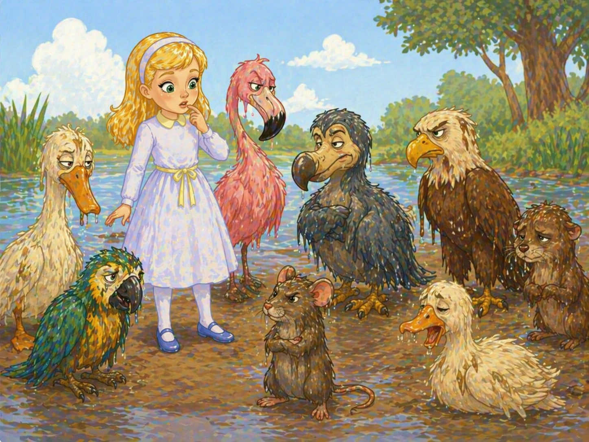
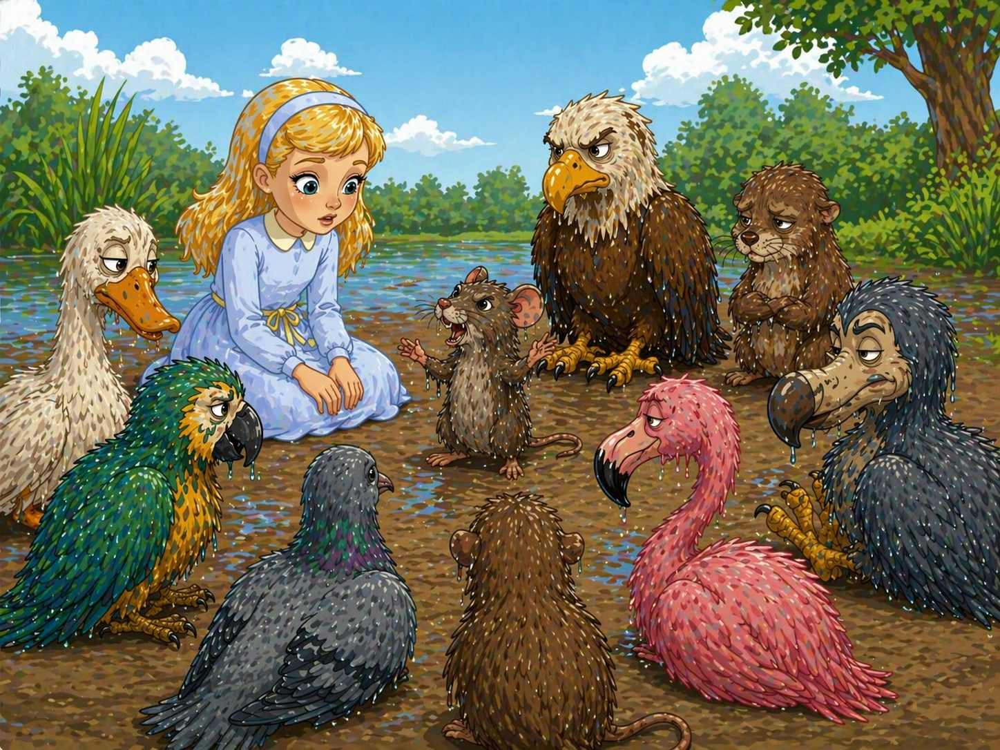
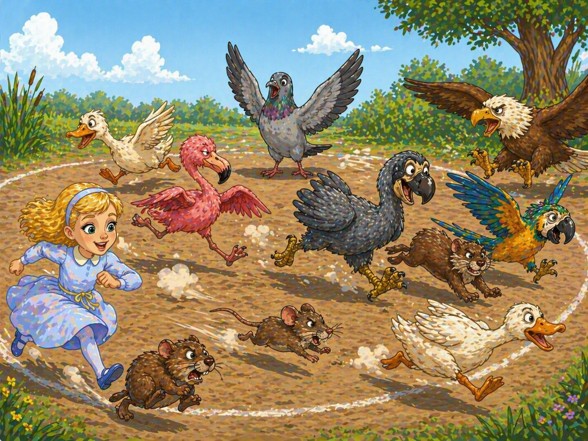
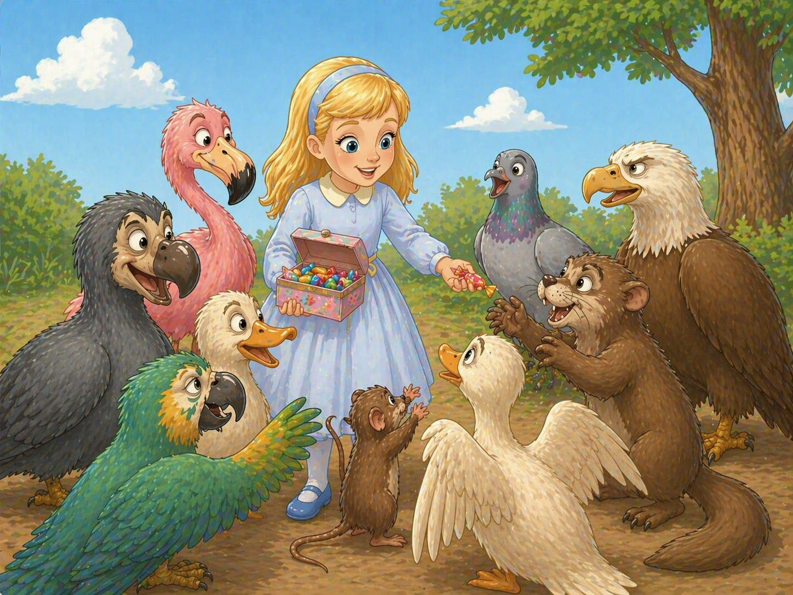
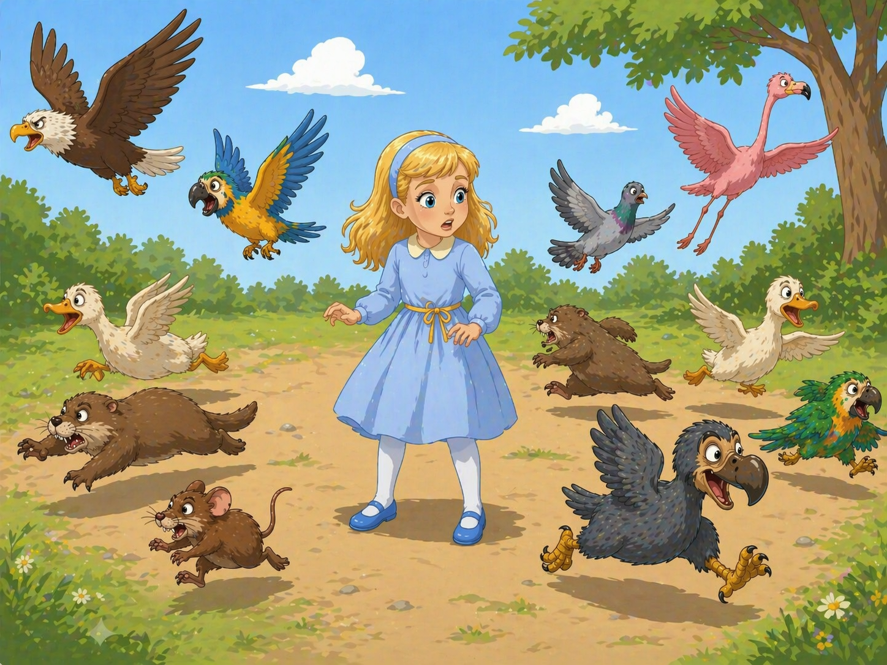

🎧 Слушай главу
Towarzystwo zebrane na brzegu wyglądało naprawdę dziwacznie: ptaki o zabłoconych piórach oraz inne zwierzęta ociekające wodą, zmęczone i złe.

Najpilniejszą sprawą było, rzecz prosta, osuszenie się. Odbyto na ten temat naradę, w której wzięła również udział Alicja. Po paru minutach rozmawiała już ze wszystkimi tak swobodnie, jak gdyby znała ich przez całe życie. Wdała się nawet w dłuższą sprzeczkę z Papużką, która w końcu obraziła się, mówiąc: "Jestem starsza od ciebie, więc muszę mieć rację". Na to znowu Alicja nie mogła się zgodzić nie znając wieku Papużki.
Ponieważ zaś ta ostatnia odmówiła stanowczo odpowiedzi, nie było właściwie nic więcej do powiedzenia.
Na koniec Mysz, która robiła wrażenie osoby cieszącej się w tym towarzystwie dużym szacunkiem, krzyknęła:
- Proszę siadać i słuchać, co powiem1 Zaraz was wszystkich osuszę.
Usiedli więc kołem z Myszą pośrodku. Alicja wpatrywała się w Mysz z niecierpliwością, obawiała się bowiem nie na żarty przeziębienia.

- Hm, hm - odchrząknęła Mysz z bardzo ważną miną - czy jesteście już gotowi? Chcecie się osuszyć? Więc słuchajcie: oto najsuchrza rzecz, jaką znam. Proszę o spokój! "Wilhelm Zdobywca, któremu sprzyjał papież, szybko podporządkował sobie Anglików, potrzebujących przywódcy nawykłego do najazdów i podbojów. Edwin i Morcar, hrabiowie Mercii i Northumbrii..."
- Brr! - odezwała się Papużka wstrząsając się gwałtownie.
- Bardzo przepraszam - rzekła Mysz, groźnie marszcząc brwi - czy pani chciała może coś powiedzieć?
- Nie, to nie ja! - krzyknęła szybko Papużka.
- Miałam wrażenie, że to właśnie pani - rzekła Mysz z godnością. - Jeśli nie, to mówię dalej: "Edwin i Morcar, hrabiowie Mercii i Northumbrii, opowiedzieli się za nim; nawet patriotyczny arcybiskup Canterbury, Stigand, znalazł się..."
- Co znalazł? - zapytała Kaczka.
- "... znalazł się..." - odpowiedziała Mysz z wyraźną irytacją. - Wie pani chyba, co to znaczy?
- Wiem, co to znaczy, kiedy ja sama coś znajduję - rzekła Kaczka. - Przeważnie jest to żaba albo owad, ale co znalazł arcybiskup?
Mysz nie zwróciła już uwagi na to pytanie i ciągnęła dalej.
- "... znalazł się w ich odwodzie. Wraz z Edgarem Atheling udał się do Wilhelma i ofiarował mu koronę. Wilhelm zachowywał się początkowo w sposób wstrzemięźliwy. Ale zuchwalstwo Normanów..." - tu Mysz zwróciła się do Alicji z niespodziewanym pytaniem: - Jak się czujesz, moja droga?
- Jestem tak samo morka jak i przedtem - odrzekła smutnie Alicja. - Wcale mnie to nie osuszyło.
- Wobec tego zgłaszam rezolucję - rzekł powstając Gołąb - aby zebranie zostało odroczone ze względu na konieczność natychmiastowego zastosowania energiczniejszych środków...
- Mów pan po ludzku! - przerwał Orzełek. - Nie rozumiem nawet połowy z tych słów i obawiam się, że pan sam ich nie rozumie. - Tu Orzełek odwrócił się dyskretnie, aby skryć swój uśmiech. Niektóre gorzej wychowane ptaki zaczęły głośno chichotać.
- Chciałem tylko powiedzieć - rzekł Gołąb obrażony - że najlepiej osuszyłyby nas wyścigi ptasie.
- Co to są wyścigi ptasie? - zapytała Alicja nie tyle z ciekawości, ile z uprzejmości, gdyż Gołąb wyraźnie czekał na dyskusję, wszyscy zaś milczeli jak zaklęci.
- Hm - rzekł Gołąb z powagą - najlepiej wytłumaczę ci to praktycznie.
Ponieważ to, co powiedział Gołąb, może przydać się w nudny zimowy dzień i Wam, drodzy Czytelnicy, przeto opowiem, w jaki sposób zabrał się do dzieła: najpierw wyznaczył tor wyścigowy o kształcie zbliżonym do koła.
- Dokładność nie gra roli - rzekł wyjaśniająco.
Potem całe towarzystwo zostało rozstawione na torze jak popadło.
Następnie Gołąb zawołał: Raz, dwa, trzy! - i wszyscy zaczęli pędzić w dowolnych kierunkach, przystając i znów biegnąć, jak im się tylko podobało, tak że trudno było ustalić chwilę zakończenia wyścigu. Mimo to, kiedy biegali tak dobre pół godziny i zupełnie się osuszyli, Gołąb krzyknął nagle:

- Koniec wyścigów!
Wtedy wszyscy otoczyli go, ciężko dysząc i pytając:
- Kto zwyciężył?
Aby dać odpowiedź na to pytanie, Gołąb musiał się poważnie zastanowić. Siedział więc przez dłuższą chwilę z palcem na czole (ulubiona pozycja wielkich poetów), gdy tymczasem reszta towarzystwa wyczekiwała z niepokojem na jego decyzję. W końcu Gołąb zdecydował:
- Wygrali wszyscy i wszyscy muszą dostać nagrody.
- Ale kto nam rozda nagrody? - zapytał chór głosów.
- Oczywiście, że ona - rzekł Gołąb, wskazując palcem
Na te słowa otoczyła ją cała gromada, wołając:
- Nagrody, nagrody, chcemy nagród!
Alicja nie wiedziała, jak wybrnąć z tej sytuacji.
Przypadkowo wsunęła rękę do kieszeni i znalazła tam pudełeczko cukierków szczęśliwym trafem nie roztopionych przez słoną wodę. Rozdała więc cukierki uczestnikom wyścigu, przy czym starczyło akurat po cukierku na osobę.

- Ale jej także należy się nagroda - zauważyła Mysz.
- Oczywiście - rzekł Gołąb z powagą. - Co masz jeszcze w kieszeni? - dodał zwracając się do Alicji.
- Tylko naparstek - rzekła smutnie Alicja.
- Daj mi go!
Po czym wszyscy raz jeszcze otoczyli Alicję, Gołąb zaś wręczył jej uroczyście naparstek, mówiąc:
- Prosimy cię o przyjęcie tego wytwornego naparstka. - To krótkie przemówienie przyjęte zostało przez zebranych oklaskami.
Alicji wydawało się to głupie. Wszyscy mieli jednak tak poważne miny, że nie odważyła się roześmiać. Dygnęła więc po prostu, przybierając najpoważniejszą minę, na jaką mogła się zdobyć.
Następnym punktem programu było zjedzenie cukierków. Wywołało to sporo hałasu i zamieszania. Duże ptaki skarżyły się, że nie czują smaku cukierków, małe dławiły się nimi i trzeba było bić w plecy. W końcu jednak zapanował spokój. Ptaki zasiadły kołem i poprosiły Mysz, żeby im coś opowiedziała.
- Obiecałaś, że opowiesz mi swoją historię - rzekła Alicja. - Dlaczego nie znosisz "k" i "p" - dodała półszeptem, nie chcąc raz jeszcze obrazić Myszy.
- Dobrze, obiecała. Zobaczysz sama, jak bardzo ten problem jest zaogniony...
- Za o... - powtórzyła bezmyślnie Alicja, nie bardzo rozumiejąc, o co chodzi. - Za o..., ale za co?... za ogony! - przypomniała sobie, gdy popatrzyła na długi i kręty ogon Myszy.
W ten sposób jej historia przybrała dla Alicji jakby kształt mysiego ogona:
Pędziła Myszka do dziury, by jej nie złapał Kot bury, ale nie pomógł niebodze ten rozpaczliwy bieg, bo Kot jej stanął na drodze i rzekł:
"- Nudzę się dziś srodze, więc ci wytoczyć chcę sprawę. Ja będę oskarżycielem..."
"- A gdzie masz przysięgłych ławę, gdzie sędziego?" - pyta Mysz nieśmiele.
"- Więc cóż z tego? Proces formalnie się odbędzie, sam będę ławą przysięgłych i sędzią - rzecze Kot przebiegły, jeżąc sierść - wszystko rozsądzę i rozważę po czym cię skażę na śmierć!"
- Ty wcale nie słuchasz! - rzekła Mysz przerywając swoją opowieść i patrząc surowo na Alicję. - O czym ty właściwie myślisz?
- Przepraszam panią najmocniej - odpowiedziała pokornie Alicja. - Zdaje się, że była pani przy czwartym zakręcie?
- Nie wiem, o co ci idzie, mów zwięźle - rzekła Mysz z wyraźną irytacją.
- O jakim węźle mam mówić? - zapytała Alicja. - Jeśli ma pani jakiś węzeł, to mogę zaraz pomóc w rozplątywaniu go...
- Nie powiedziałam nic podobnego - rzekła Mysz, po czym wstała z obrażoną miną. - Znieważasz mnie mówiąc takie głupstwa.
- Ja naprawdę nie chciałam! - zawołała Alicja bliska płaczu. - Pani tak łatwo się obraża...
Mysz mruknęła tylko coś niezrozumiałego.
- Bardzo proszę, niechże pani łaskawie dokończy swego opowiadania! - krzyczała Alicja za odchodzącą Myszą.
Zwierzęta przyłączyły się do jej prośby wołając:
- Prosimy, prosimy! - ale Mysz potrząsała niecierpliwie głową i oddalała się coraz szybciej.
- Wielka szkoda, że nie chce z nami zostać - westchnęła Papużka, kiedy Mysz znikła im z oczu.
A pewna stara Langusta rzekła do córki:
- Pamiętaj, moja droga, niech to będzie dla ciebie przestroga, żebyś niegdy nie traciła równowagi.
- Daj spokój, mamo - odpowiedziała opryskliwie młoda Langusta. - Ty mogłabyś wyprowadzić z równowagi nawet ślimaka!
- Jakżebym chciała mieć tu przy sobie Jacka - rzekła Alicja na wpół do siebie. - Zaraz by ją sprowadził z powrotem!
- A któż to jest Jacek, jeśli wolno wiedzieć? - spytała Papużka.
Alicja odpowiedziała z zapałem, była bowiem zawsze gotowa wychwalać swego ulubieńca:
- Jacek to nasz kot. Nie możecie sobie wyobrazić, jak świetnie łapie myszy! A jak się ugania za ptakami! Jeśli tylko dojrzy jakiegoś ptaszka, to na pewno schwyta go i pożre!...
Słowa Alicji wywołały ogromne poruszenie wśród obecnych. Niektóre ptaki uciekły natychmiast. Pewna stara Sroka otuliła się bardzo starannie skrzydłami, mówiąc:
- Będę musiała już iść do domu. Dzisiejsze powietrze wyraźnie szkodzi mi na gardło.
Kanarek zawołał drżącym głosikiem do swych dzieci:
- Chodźcie, moje drogie! Już najwyższy czas, abyście leżały w łóżeczkach.
Pod różnymi pretekstami ptaki rozbiegły się i Alicja została po chwili sama.

- Jaka szkoda, że wspomniałam Jacka! - rzekła ze smutkiem. - Nikt go jakoś tu na dole nie kocha, ale ja mimo to przysięgłabym, że jest to najmilszy kot na świecie! O drogi Jacku! Czy cię jeszcze kiedy zobaczę? - To mówiąc Alicja zaczęła płakać, ponieważ poczuła się nagle strasznie samotna i bezbronna. Po chwili jednak usłyszała w oddali odgłosy stąpania. Spojrzała więc z ciekawością, sądząc, że to Mysz rozmyśliła się i powraca, aby dokończyć swej przerwanej opowieści.